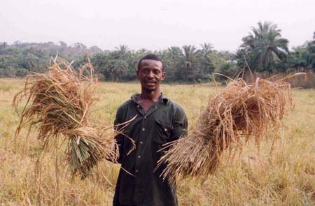

User Profile
Your registered details appear here.
This page demonstrates a profile feature using browser localStorage. It works without a backend for presentation purposes.

Profile Actions
Use these buttons depending on your account type.